...making Linux just a little more fun!
By Víctor Luaña
Universidad de Oviedo, Departamento de Química Física y Analítica, E-33006-Oviedo, Spain.
[ The author had specifically requested that we keep
the large font used in his article in order to match the font size of the
equation images; I agreed, since the two would look disproportionate otherwise.
My apologies to anyone whose eyeballs exploded due to the rapid decompression.
 -- Ben ]
-- Ben ]
gnuplot's internal programming capabilities are used to plot the continuous and segmented versions of the spirograph equations. The segmented version, in particular, stretches the program model and requires the emulation of internal loops and conditional sentences. As a final exercise, we will develop an extensible mini-language, mixing gawk and gnuplot programming, that lets the user combine any number of generalized spirographic patterns in a design.
A PDF version of this article is available for archiving and printing.
Imagine the movement of a small circle that rolls, without slipping, on the inside of a rigid circle. Imagine now that the small circle has an arm, rigidly attached, with a plotting pen fixed at some point. That is a recipe for drawing the hypotrochoid, a member of a large family of curves including epitrochoids (the moving circle rolls on the outside of the fixed one), cycloids (the pen is on the edge of the rolling circle), and roulettes (several forms rolling on many different types of curves) in general.
The concept of wheels rolling on wheels can, in fact, be generalized to any number of embedded elements. Complex lathe engines, known as Guilloché machines, have been used since the 17th or 18th century for engraving beautiful designs onto watches, jewels, and other items of fine craftsmanship. Many sources attribute the first use of Gilloché engravings on a watch to Abraham-Louis Breguet in 1786, but the technique was already in use on jewelry. Ancient machines are still being used, and can be seen at the RGM Watch Company Web pages. Intricate Guilloché patterns are usually incorporated on bank notes and official documents to prevent forgery. The name "Spirograph" comes, actually, from the trade name of a toy invented in 1962 by Denys Fisher, a British electronic engineer, and licensed to several toy companies over the years.
Our purpose, however, is not to explore the history or even the mathematical aspects of the Spirograph decorations: our interest is centered on the techniques needed to use gnuplot as the drawing engine of the cycloid-related curves.
Section II presents a simple derivation for the hypotrochoid equations and discusses a generalization to any number of rolling wheels described by F. Farris. Section III describes the techniques required to draw the cycloid-related curves with gnuplot. From the use of complex arithmetic to the simulation of an implicit do loop and the recursive definition of user functions, gnuplot offers a large capability for the creation of algorithmic designs. The techniques discussed in Section III are embedded within a simple gawk filter that reads a formal description of a cycloid pattern and uses gnuplot to produce the final plot. The design of this filter is the subject of Section IV.
Figure 1 shows the formation of a hypotrochoid and will help us in determining the parametric equations for the curve. Three lengths determine the shape of the curve: R, the radius of the fixed circle; r, the radius of the moving circle; and p, the distance from the pen to the moving circle center. The center of the fixed circle, point O, will serve as the origin of the coordinate system. Points O' and P designate the current position of the rolling circle center and of the pen, respectively.
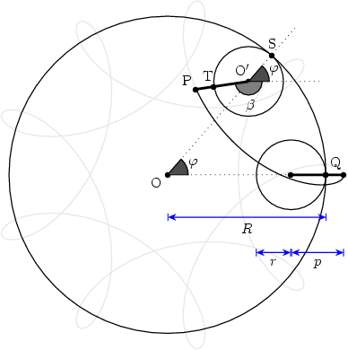
Figure 1 Geometry for the hypotrochoid equations. The
grayed figure corresponds to R=9, r=2, and p=3.
The current position for O' is easily described in circular
coordinates: fixed length 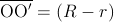
and variable
angle  . This is easily translated into Cartesian
coordinates:
. This is easily translated into Cartesian
coordinates:
Similarly, the position of the pen relative to O' is also simple to describe in circular coordinates: fixed length 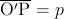 and variable angle 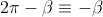 . In Cartesian coordinates:
The angles  and 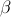
are not independent,
however. The circles roll without slipping. Hence, the arc
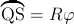
on the fixed circle must be identical
to the arc 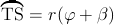
on the
rolling circle. The relationship 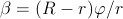
follows immediately. This equation is easy
to interpret in terms of a gearing mechanism. The fixed and
rolling wheels must have teeth of equal size to be able to
engage together. Therefore, the number of teeth must be
proportional to the wheel perimeter and, equivalently, to the
wheel radius.
and 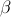
are not independent,
however. The circles roll without slipping. Hence, the arc
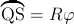
on the fixed circle must be identical
to the arc 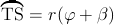
on the
rolling circle. The relationship 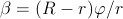
follows immediately. This equation is easy
to interpret in terms of a gearing mechanism. The fixed and
rolling wheels must have teeth of equal size to be able to
engage together. Therefore, the number of teeth must be
proportional to the wheel perimeter and, equivalently, to the
wheel radius.
Putting all this together, the current position of the pen relative to the fixed center O is given by 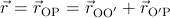 , or, equivalently:
The equations admit r and p being either positive or negative. A negative r would represent a moving wheel rolling on the outside, rather than the inside, of the fixed circumference. I.e., it will be a epitrochoid curve. Choosing p=r with r positive or negative will produce hypo or epicycloid curves, respectively.
It is easy to see that multiplying the three parameters R, r, and p by a common factor produces a global scaling of the curve dimensions but does not change its shape. On the other hand, the figure traced by this parametric equation closes only if R/r is a rational number. Let us assume that n and m are the smallest integers such that |R/r| = n/m, and let g be the greatest common divisor of n and m (gcd(n,m)). The curve will then close after a total rotation of m/g times 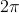 (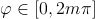 ) and it will show n/g lobes or spikes.
The equations can be generalized for three or more wheels rolling one inside the other, and Frank Farris did so in a celebrated article in Mathematics Magazine. At this level, it is better to give up a direct simulation of the physical engine gears and examine the equations directly. A very compact and powerful notation is obtained by using complex variables, with the convention that the real and imaginary parts represent the x and y Cartesian coordinates, i.e., z=x+iy where i is the imaginary number. The general Farris equations are:
where n is the number of engaged wheels: wheel k has its center fixed on a point of the circumference of wheel (k-1). On each wheel, 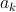 is related to the radius, 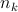 to the rotation speed, and 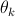 is an initial phase angle. Farris demonstrated that the z(t) curve has g-fold rotational symmetry if all the pairwise differences 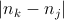 have g as their greatest common divisor.
The two wheel parametric equations can be readily translated into the following gnuplot drawing code:
set terminal png size 600,600 \
x000000 xffffff x404040 xff0000
set output "fig-spiro02.png"
set size ratio -1
set nokey
set noxtics
set noytics
set noborder
set parametric
#
x(t)=(R-r)*cos(t) + p*cos((R-r)*t/r)
y(t)=(R-r)*sin(t) - p*sin((R-r)*t/r)
#
R=100.0; r=2.0; p=80.0
set samples 2001
#
plot [t=0:2*pi] x(t),y(t)
The code saves the image as a PNG file, useful for insertion on a Web page, but any gnuplot terminal could be used. An EPS/PDF vector file with white background is better for a printed version of the document, whereas an unscaled PNG raster file with black background may look better and render faster in a Web browser. The use of the PNG terminal is a little tricky, as there appear to be two versions that differ in the recognized syntax. If gnuplot chokes on the png size 600,600 part, try using png picsize 600 600 instead. Notice that we have removed the default axes, labels, and tics. Identical scaling of the axes has also been enforced, to avoid distortion of the image. The result can be seen in Fig. 2.
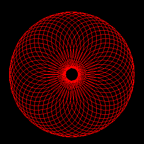
Figure 2 Hypotrochoid curve for: R=100, r=2 and
p=80.
A little exploration will reveal that: (a) p=0 produces a circle; (b) an ellipse results if R=2r and p≠r, its axes being (r+p) and |r-p|; (c) the hypocycloids are obtained by choosing p=r; (c) R=2r=2p gives rise to a line of length 2a; (d) negative values for p and/or r results in some extraordinary specimens.
The beauty and diversity of the trochoid curves call for a journey of exploration and discovery. This is much easier if the gnuplot code is embedded in a text or graphical user interface (TUI vs. GUI). A simple csh script can serve as a rudimentary but effective wrapper:
#! /bin/csh
set code = $0:t
if ($#argv < 3) goto help
set n1 = $1; set n2 = $2; set n3 = $3
set a1 = 1.0; set a2 = 1.0; set a3 = 1.0
set s1 = 0.0; set s2 = 0.0; set s3 = 0.0
if ($#argv >= 4) set a1 = $4
if ($#argv >= 5) set a2 = $5
if ($#argv >= 6) set a3 = $6
if ($#argv >= 7) set s1 = $7
if ($#argv >= 8) set s2 = $8
if ($#argv >= 9) set s3 = $9
cat << EOF | gnuplot
set size ratio -1
set nokey
set noxtics
set noytics
set noborder
set parametric
#
n1p = {0,1}*2*pi*${n1}
n2p = {0,1}*2*pi*${n2}
n3p = {0,1}*2*pi*${n3}
s1p = {0,1}*2*pi*${s1}
s2p = {0,1}*2*pi*${s2}
s3p = {0,1}*2*pi*${s3}
z(t) = ${a1}*exp(n1p*t+s1p) \
+ ${a2}*exp(n2p*t+s2p) \
+ ${a3}*exp(n3p*t+s3p)
#
set terminal png size 600,600 x000000 \
xffffff x404040 xff0000 xffa500 x66cdaa \
xcdb5cd xadd8e6 x0000ff xdda0dd x9500d3
set output "fig-spiro03.png"
#
set samples 2001
plot [t=0:1] real(z(t)),imag(z(t))
EOF
xv fig-spiro03.png
exit(0)
help:
cat << EOF
USE: $code n1 n2 n3 [a1 a2 a3 [s1 s2 s3]]
PURPOSE: Plot Farris wheels on wheels on wheels
curve for (n1,n2,n3,a1,a2,a3,s1,s2,s3).
Default value for a1, a2, a3: 1.0.
Default value for s1, s2, s3: 0.0.
EXAMPLE: $code 1 7 -17 1 0.5 1.0/3 0 0 0.24
EOF
In this example, we have used Farris equations for three wheels. Complex numbers (notice the {0,1} constant, equivalent to the imaginary number, i, in gnuplot syntax) are used to evaluate the z(t) function, but their real and imaginary parts must be explicitly extracted and passed to the plot instruction. Therefore, z(t), is actually called twice for each point. Perhaps future gnuplot versions will recognize a single complex expression as a complete argument of the parametric plot. In any case, the complex arithmetic provides a very compact notation.

|
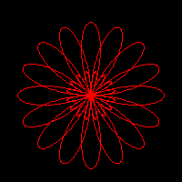 | 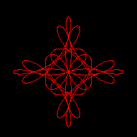 |
| 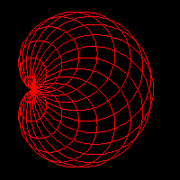 | 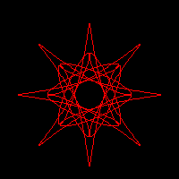 | 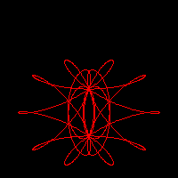 |
The script, on the other hand, can be called with anything from 3 to 9 parameters. The three obligatory parameters are n1, n2, and n3, that adjust the relative speed of the three wheels. The next group of three are a1, a2, and a3, related to the relative size of the wheels, and a default value of 1.0 is assumed for any parameter not given in the input. The last group corresponds to the initial phase angles, s1, s2, and s3, with a default value of 0.0. The script parameters are used only within gnuplot assignments. This means that the user can enter expressions rather than single integer or real values. Some care must be taken, however, when entering fractions: use 1.0/3 and not 1/3, that would be interpreted by gnuplot as an integer division and would produce an unexpected 0.
Figure 3 represents some of the most characteristic patterns exhibited by three rolling wheels of identical size. These patterns occur when the wheel speeds, [n1,n2,n3], their differences, 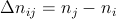 , and the greatest common divisor of the differences, 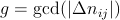 , satisfy appropriate conditions. Large values for g produce highly symmetric and generally nice motifs. Some of the most pleasant designs, however, show only a moderate symmetry and a more subtle interplay between regularity and uniqueness.
Some trends, found by the observation of a large number of cases, can help in the design of a particular motif. Assuming that the three wheels are of equal size, differences like (-g,2g,3g) can produce g-points stars, whereas g-petal daisies tend to happen for ([+/-]2g, [+/-]g, [+/-]g) differences. Palm leaves and nephroids occur when two of the 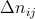 differences coincide, in absolute value, with two of the wheel speeds. Crosses and Maasai shields are rara avis that require a large number of conditions to be met: the sum of all wheel speeds must be odd (positive or negative), g must be a power of 2, and the sum of two of the differences must be equal to the third.
Changing the wheel sizes will also produce significant variations in the drawings. Adding small phase angles to one or more wheels can be used to introduce some irregularity into an otherwise too symmetric and uninteresting motif.
The two previous examples have used the spirographic equations with a large number of sample points, large enough to show the true nature of the curves: both continuous and derivable, as they are the sums of exponential functions. The Web has plenty of simplistic Java applets that poorly render the equations by using a small number of points per roll. This method, albeit a wrong representation of the true curves, can produce quite pleasant images. In a declarative language, this type of plot would be produced using a simple loop:
nturns = abs(rsmall) / gcd(Rbig,abs(rsmall))
M = nturns * resolution
inumber = {0,1}
for (k=0; k<=M; k++) {
ang1 = inumber * k * 2*pi/M
ang2 = ang1 * (rsmall-Rbig)/rsmall
z[k] = (Rbig-rsmall)*exp(ang1) + p*exp(ang2)
if (k>0) { PLOT LINE from z[k-1] to z[k] }
}
where resolution holds the number of sample points used for each roll around the main (fixed) wheel and nturns is the number of times this wheel must be rolled around. The above pseudocode assumes the use of complex arithmetic and the availability of a gcd() function.
Loops and conditional expressions are not part of the gnuplot language, but there are ways around this limitation. First, an implicit loop is automatically performed on each plot instruction. We just have to be careful to fix an appropriate samples value and a correct range for the independent variable (the parametric variable, in our case). The ternary operator (a?b:c, evaluate and return b if a is true, and c otherwise) can be used as a restricted conditional test. gnuplot's user-defined functions can be recursive, on the other hand, and this can also be used as a restricted form of loop.
The next example uses all of the above ideas. Notice, in particular, the recursive definition of the gcd() function, that implements Euclid's algorithm for the greatest common divisor. The calculation of the number of turns and sample points is simplified by assuming that R and r are integers.
set size ratio -1 set nokey set noxtics set noytics set noborder set parametric # x(t) = (R-r)*cos(t) + p*cos((R-r)*t/r) y(t) = (R-r)*sin(t) - p*sin((R-r)*t/r) # # Greatest common divisor: gcd(x,y) = (x%y==0 ? y : gcd(y,x%y)) # R = 100; r = -49; p = -66; res = 10 # rr = abs(r) nturns = rr / gcd(R,rr) samp = 1 + res * nturns set samples samp # plot [t=0:nturns*2*pi] x(t),y(t)
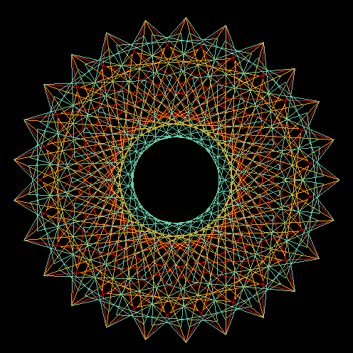
Figure 4 Curve stitching patterns from the hypotrochoid
curve with: R=100, r=2 and p=70. The three patterns correspond
to a resolution of 75, 125 and 175 sample points,
respectively.
The last example works well for drawing a single curve with a given resolution, but the most interesting patterns are obtained by mixing several renderings of one or more curves with well chosen resolutions. To do this within a single gnuplot run, we have to take explicit control of the angles used for each equation. For instance:
set terminal png size 600,600 x000000 \
xffffff x404040 xff0000 xffa500 x66cdaa \
xcdb5cd xadd8e6 x0000ff xdda0dd x9500d3
set output "fig-spiro05.png"
set size ratio -1
set nokey
set noxtics
set noytics
set noborder
set parametric
#
# General parametric equations:
x(t,R,r,p) = (R-r)*cos(t) + p*cos((R-r)*t/r)
y(t,R,r,p) = (R-r)*sin(t) - p*sin((R-r)*t/r)
#
# Values for the dummy parameter:
t(i,n) = i*2*pi/n
#
# Greatest common divisor:
gcd(x,y) = (x%y==0 ? y : gcd(y,x%y))
#
# The different curves:
R1 = 100; r1 = 2; p1 = 70; res1 = 75
R2 = 100; r2 = 2; p2 = 70; res2 = 125
R3 = 100; r3 = 2; p3 = 70; res3 = 175
#
nseg1 = res1 * abs(r1) / gcd(R1,abs(r1))
nseg2 = res2 * abs(r2) / gcd(R2,abs(r2))
nseg3 = res3 * abs(r3) / gcd(R3,abs(r3))
n12 = (nseg1 * nseg2) / gcd(nseg1,nseg2)
nsamp = (n12 * nseg3) / gcd(n12,nseg3)
nsamp1 = nsamp + 1
set samples nsamp1
#
plot [i=0:nsamp] \
x(t(i,res1),R1,r1,p1),y(t(i,res1),R1,r1,p1) \
, x(t(i,res2),R2,r2,p2),y(t(i,res2),R2,r2,p2) \
, x(t(i,res3),R3,r3,p3),y(t(i,res3),R3,r3,p3)
The result of this code is represented in figure 4. The intricate embroidery of the three curve representations, only recognizable by their different colors, show an appealing and delicate beauty that deserves further exploration. However, using the same plot order for the three is far from being effective and poses many problems for its generalization to an arbitrary number and class of representations. In particular, the number of sample points has to be a minimum common multiple of the best number of sample points for each independent figure.
In the case of figure 4, the three curves would need 75, 125 and 175 sample points, respectively, but plotting the three simultaneously requires 2625 samples, instead. So, the first component is repeated 35 times, 21 times the second, and 15 times the third. This repetition will add substantially to the plotting time but, if the final result is written to a raster format like PNG, there will be no increase on the size of the final file. If we use a vector format like EPS or SVG, however, the file size will also increase substantially.
We can avoid the unnecessary repetition by turning to a two-pass method. In the first pass, each curve is created independently in gnuplot, and its points are saved in a file using a set terminal table output mode. The second pass combines the points from all the previous files into a single design, that is saved in whatever raster or vector format seems appropriate. Instead of providing an example of this technique, we will use the idea for our final and most ambitious project.
All the techniques developed in the previous section can be made more accessible if we design a simple way of describing a plot and we create the tool for translating the description to the appropriate gnuplot instructions. The perfect translation tool would hide the details of the gnuplot syntax from the user while maintaining an appropriate degree of flexibility.
We have written an experimental translator (See/download the translator) in awk for rapid prototyping and easy experimentation. We are going to describe the language currently recognized. The following notation will be used. Fixed names are written in boldface. Variable data appears in italica, enclosed within square brackets, [], if the data is optional. The data type is indicated by the suffix of the variable name: var.s (a string sequence); var.i (an integer); var.r (a real value); var.c (a complex value in gnuplot notation, i.e., {real_part,imaginary_part}); var.re and var.ce (a real or complex expression, like pi*{0,1}/12). Missing values are forbidden within the integer, real and complex data and expressions.
The instructions currently implemented in our translation script are:
var = var_ini
while (var does not reach var_end) do
# compute and draw a new installment
# of the current curve
var = var_ini + (var_inc)
end
The var.s string can be used as a variable in the
definition of the curve (see the examples below). The
var_inc.r value can be negative. There is currently a limit
of 1000 times for the number of copies produced by this loop.
| 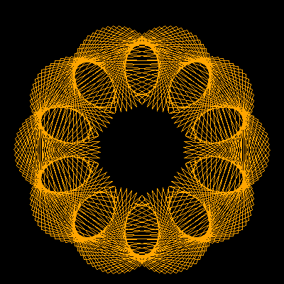 | 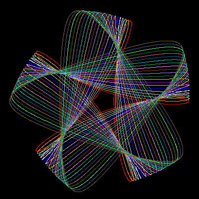 |
| (a) | (b) |
| 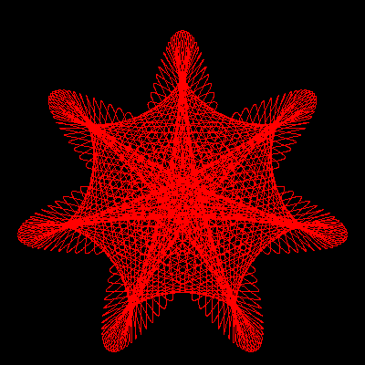 | 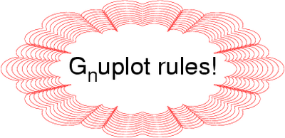 |
| (c) | (d) |
Some examples of the above rules in action may help to understand the possibilities. The first example, represented in Fig. 5(a), shows the use of a simple trochoid curve with a small sampling:
project example01
terminal png size 600,600 x000000
curve 10
addterm trochoid 100 -49 76
The second example shows the use of a loop instruction to create copies of a curve, applying a little phase rotation and size change to each new copy. See the resulting image in Fig. 5(b):
project example02
terminal png size 600,600 x000000
curve
#style lt 1
loop kkk 0 20 1
addterm wheel 4*0.98**kkk -3 kkk/200.
addterm wheel 5*1.02**kkk 2 kkk/200.
The third image, Fig. 5(c), corresponds to a multiple copy version of three Farris wheels:
project example03
terminal png size 600,600 x000000
curve
style lt 1
loop kkk 0 20 1
addterm wheel 4 -5 -kkk/60.
addterm wheel 3 2 kkk/60.
addterm wheel 2 9 0.
Our last example shows a decoration around some text. The decoration was designed by starting with a large Farris wheel and adding two other much smaller wheels, always maintaining an 8-fold symmetry. The use of gfactors provides an easy way to stretch an otherwise round motif.
project example04 terminal postscript eps enhanced color "Helvetica" 48 gfactors 1.4 0.7 curve style lt 1 loop kkk 0 10 1 addterm wheel 200*0.96**kkk 1 0. addterm wheel 10*0.96**kkk 9 0. addterm wheel 9*0.96**kkk 23 0. label 0 0 G_nuplot rules!
We should not end this report without mentioning, at least, some of the excellent Java applets that can be found on the Internet (Paramo2004, Little2001, Little1997, Garg, Ziring2000). A well conceived GUI can be of great help in the interactive exploration of a designated subset of the vast Spirograph parametric space. It is not the only approach, however. A custom mini-language can give access to an arbitrarily large parametric space and hide the dirty details of code generation. The gnuplot engine has been used for years to produce professional quality plots. Some of its drawbacks, like the lack of true loop mechanisms, can be eliminated with some ingenuity or by embedding the engine within a more general programming tool.
The author thanks the Spanish Ministerio de Educación y Ciencia for financial support under project BQU2003-06553.
Talkback: Discuss this article with The Answer Gang
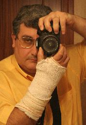
I'm a Spaniard, living in Oviedo, close to the northern coast of Spain. Married, with a teenager daughter ("hey, dad, this spiro thing is cool!"), I teach Physical Chemistry and do research on Theoretical Chemistry for a living. I have programmed on all sort of machines, from the mythical HP41C to the not less mythical Cray X and Y supercomputers (the end of an era left us short of a good crazy machine), for the last 25 years. I was captivated by linux around 1993, when our research group discovered the first Slackware distribution. Our current infrastructure is based on Debian and includes a half-mounted Top500 wannabee shared among many research groups.
On the left: self portrait in front of a mirror (Feb. 2006). Yes, I truly love photography, but I don't like appearing on images myself. Anyway, this self portrait has something that I don't dislike too much. The band on my left hand has disappeared long ago.